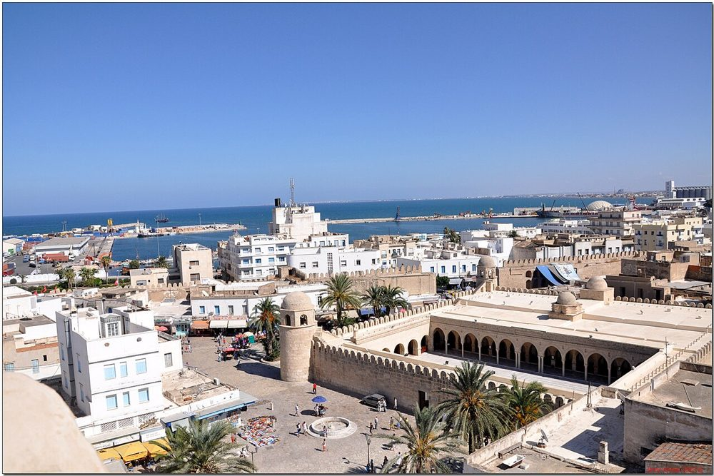
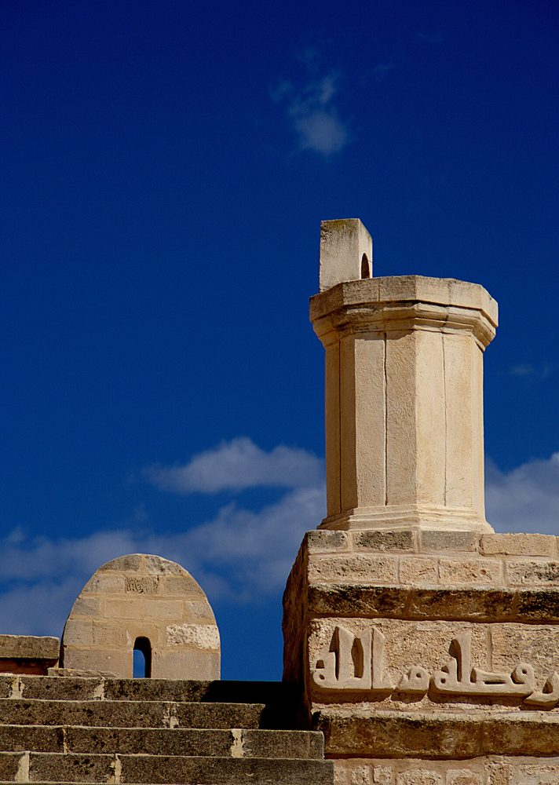

简介
位于老城入口处，外形宛如一座堡垒，850-851 年建于守卫海岸的里巴特（军事修道堡）旁。它朴素而雄浑，是联合国教科文组织世界遗产苏塞老城的一部分。
照片


历史
它于 850-851 年由艾格莱卜王朝埃米尔艾布·阿拔斯·穆罕默德兴建，比苏塞里巴特晚约三十年；庭院回廊上的一段库法体铭文记载了它的建造。在埃米尔易卜拉欣二世（875-902 年）时期，苏塞成为伊弗里基亚第二大城市，清真寺也得到扩建。
建筑
雉堞式的墙垣、顶部带小穹顶的角楼：这座清真寺形似堡垒，没有真正的宣礼塔，大概是因为邻近里巴特的瞭望塔起着这一作用。礼拜殿有 13 条纵廊；较宽的中廊和米哈拉布前的横廊构成“T”形，并以两座穹顶加以突出。
重要年代
- 821邻近的苏塞里巴特竣工
- 850清真寺建成（850-851 年）
- 875易卜拉欣二世时期扩建（875-902 年）
- 1988苏塞老城被列入联合国教科文组织世界遗产名录
参观
这里首先是礼拜的场所：请穿着得体，进入礼拜殿前请脱鞋，并避开礼拜时间。在一些大清真寺，非穆斯林访客可以进入庭院，但不能进入礼拜殿。开放时间会有变动：请在当地询问。
在地图上
资料与链接
资料来源
- 文字由 Mosquées en Tunisie 根据上述资料（维基百科、Qantara、Discover Islamic Art、联合国教科文组织）撰写，核对于 2026 年 10 月 9 日。
- Wikidata : Q919958 (CC0)
- 照片：维基共享资源，每张照片下方注明作者和许可协议。
- 位置：OpenStreetMap（ODbL）和 Wikidata。